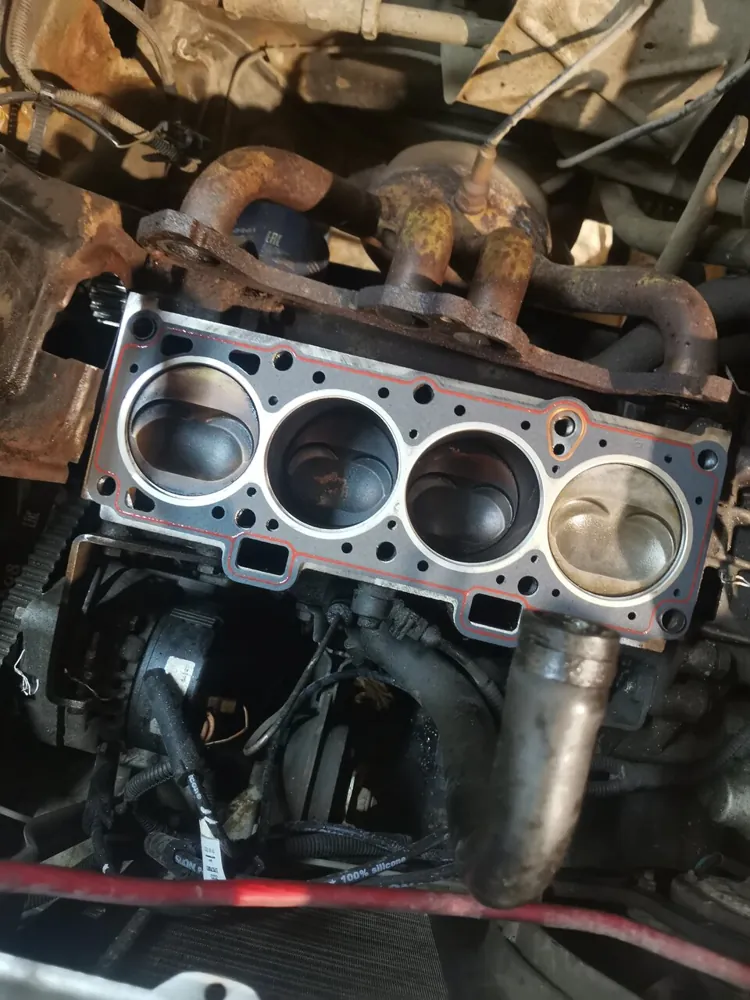
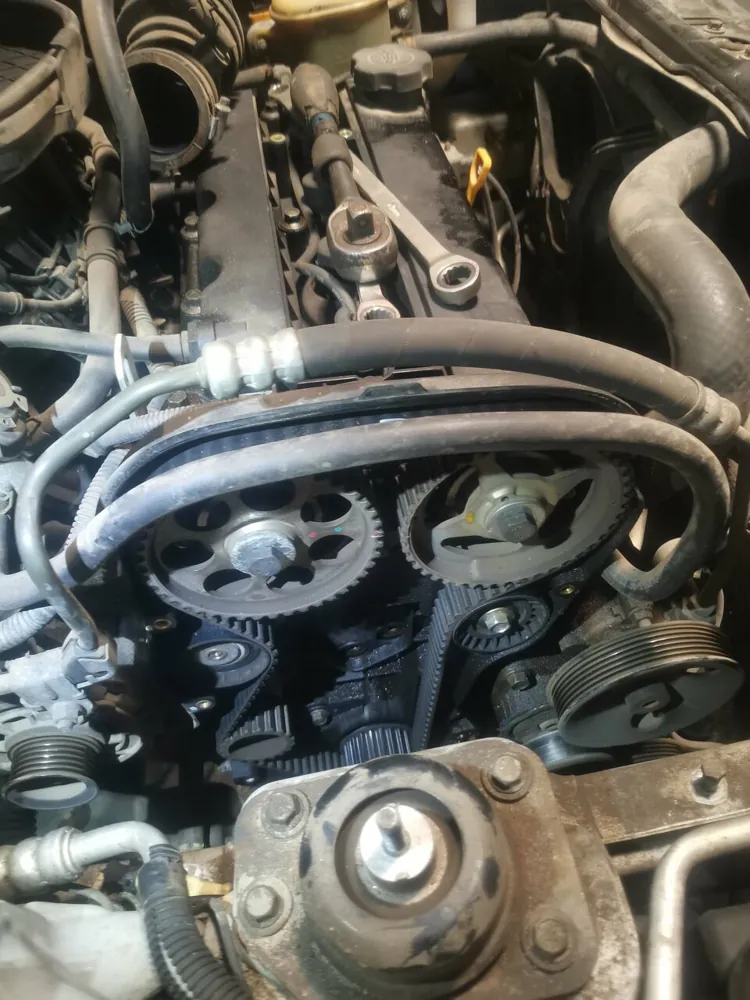
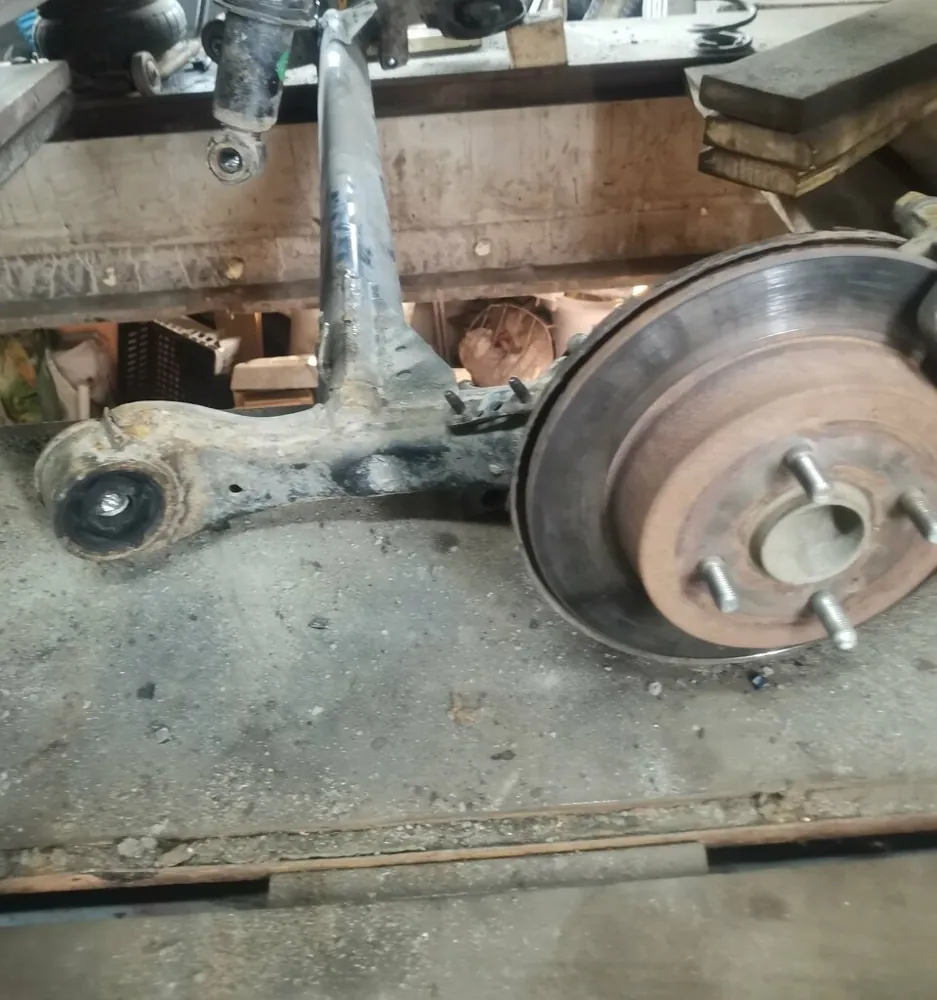
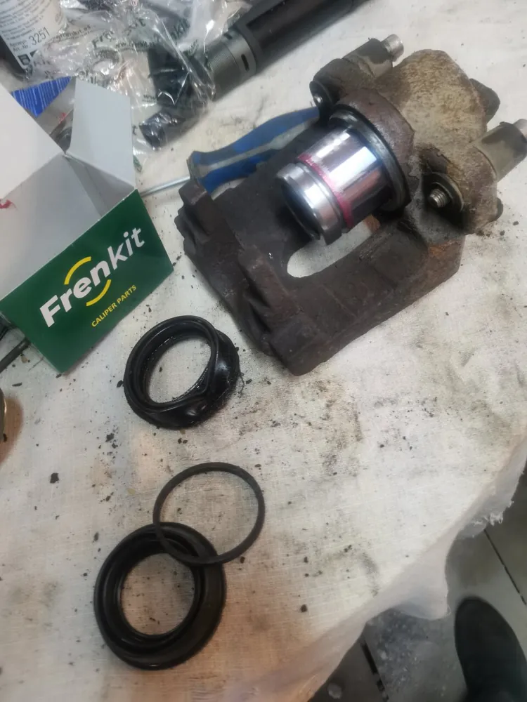
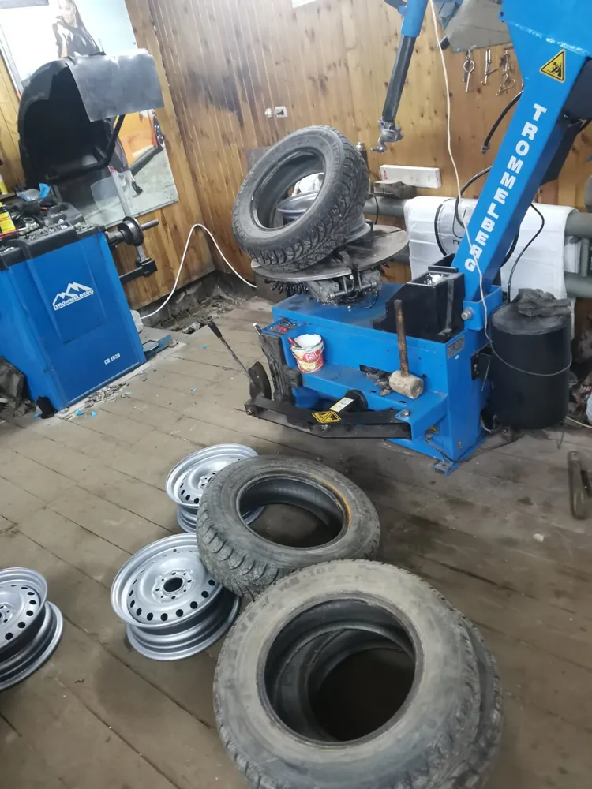
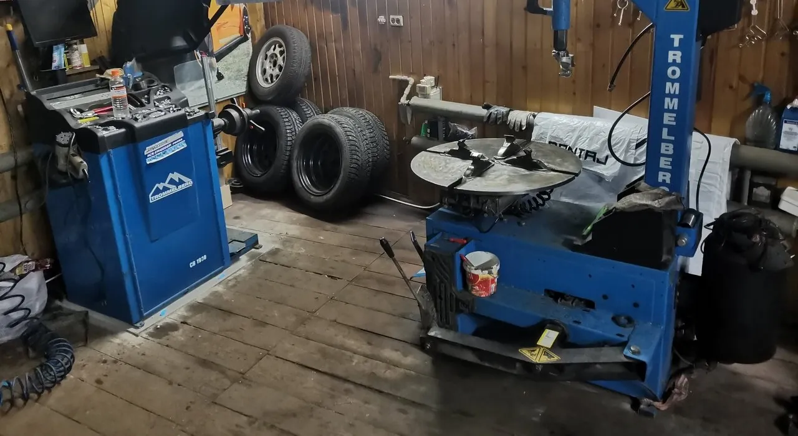
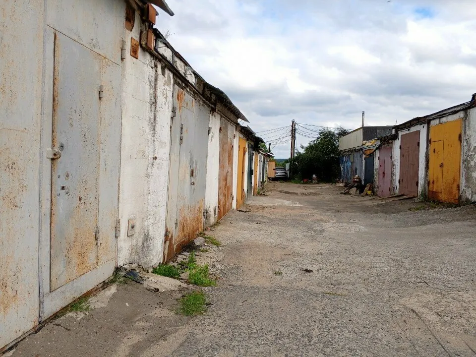

Мастер золотые руки! Качественно, быстро, по адекватной цене. После такого в официальный сервис и не хочется ехать на "обираловку". Рекомендую
случай из отзывов
Застучал мотор? Не спешите менять цепь
в других местах сказали
50 000 ₽
«советовался с автослесарями и они все говорили мне,что застучала цепь, ремонт выходил в 50 к»
у Кота оказалось
5 минут
«приехал в этот сервис и он просто подтянул тепловой кожук,делов вышло на 5 минут»
Сергей Ратников, отзыв на Яндекс Картах. Так работает хорошая диагностика: сначала найти причину, потом чинить.
что чиним
От стука в моторе до сезонной переобувки





И ещё
Компьютерная диагностикаСцеплениеВыхлопная системаСтартерыЧистка форсунокПромывка инжектораКарбюраторыЗамена маслаУдаление катализаторовПарктроникиШумоизоляцияЗапчасти под заказ

кто чинит
Мастер Павел, к которому возвращаются
- «Дело свое знает, не первый раз у него ремонтирую свою машину!»Boris Akkuratov
- «Ответили на все вопросы, все рассказали, показали, озвучили рекомендации без навязывания.»Анатолий
- «Огромное количество запчастей в наличии и на заказ!!!»Дмитрий Котов
цена
Платите за ремонт, а не за лишние поломки
Стоимость зависит от машины и неисправности, её назовут по телефону или после осмотра. Оплата картой.
Цены на основные работы: {{прайс}}
Гарантия: {{условия гарантии}}
отзывы
Что говорят о нас наши клиенты
5,037 оценок и 19 отзывов на Яндекс Картах
Павел прекрасный, "дотошный" в хорошем смысле мастер. Никогда не припищет лишнюю поломку. По подвеске, мотору - только к нему!
Был неоднократно, мастер Павел работает четко быстро, без навязываний лишнего, всегда посоветует как лучше и что делать!!!Огромное количество запчастей в наличии и на заказ!!!Очень Грамотный специалист!!!Однозначно рекомендую данный объект для обследования и ремонта вашего железного коня!!!
Договорились быстро, сразу посоветовали запчасти. Качественный ремонт за адекватный ценник. Ответили на все вопросы, все рассказали, показали, озвучили рекомендации без навязывания. Определённо советую!!!
Очень рекомендую. Менял колодки и перебувался. Быстро и качественно. Мастер учтивый и добродушный. Соотношение цены и качества.
Отличный мастер, делает все на совесть, рекомендую! Но запись плотная всегда. Записывайтесь заранее.
Отличный сервис!! Отличный мастер! Дело свое знает, не первый раз у него ремонтирую свою машину! Все работы делает как себе, качествено!! Рекомендую!!
Благодарю Павла за профессионализм, безотказность и высокое качество работы! Он просто спаситель!!
Хороший внимательный мастер. Прилично оборудованное рабочее место с хорошим профессиональным инструментом.
отличный сервис, очень качественный подход. цены приемлемые. лучше всех именных слесарок. Павел знает свое дело. советую
Доброго дня! Частенько обращаюсь в данный автосервис. Всегда всё по высшему разряду. Удобно и доступно. Рекомендую.
Застучал двигатель на прогреве,советовался с автослесарями и они все говорили мне,что застучала цепь, ремонт выходил в 50 к,приехал в этот сервис и он просто подтянул тепловой кожук,делов вышло на 5 минут
как найти
Колычёво, гаражи
+7 (915) 094-89-63- ЧасыПн–Пт 10:00–19:00, Сб–Вс 12:00–18:00
- АдресКоломна, район Колычёво, гаражный массив. Номер гаража и как проехать: {{номер гаража и проезд}}
- Написать
- ЗаписьПо телефону. «Но запись плотная всегда. Записывайтесь заранее.»

Открыть на Яндекс КартахМаршрут до мастерской